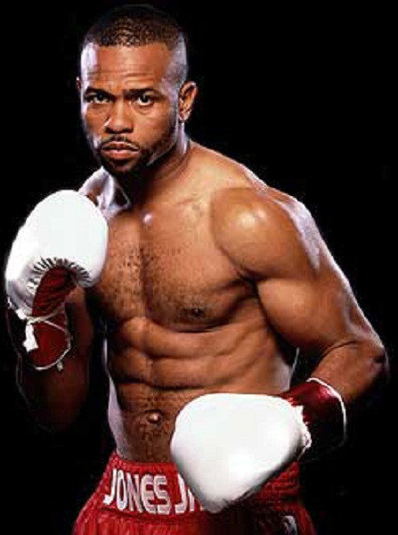
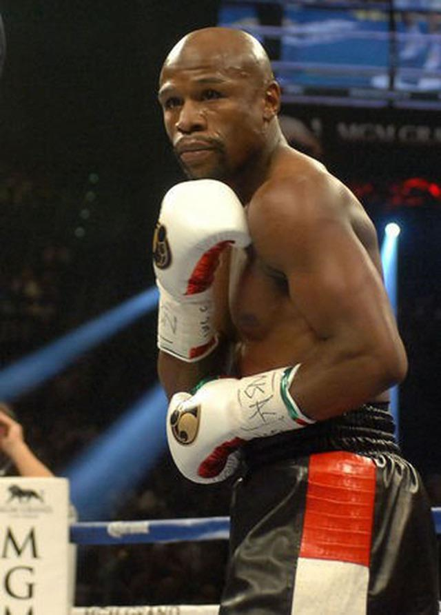
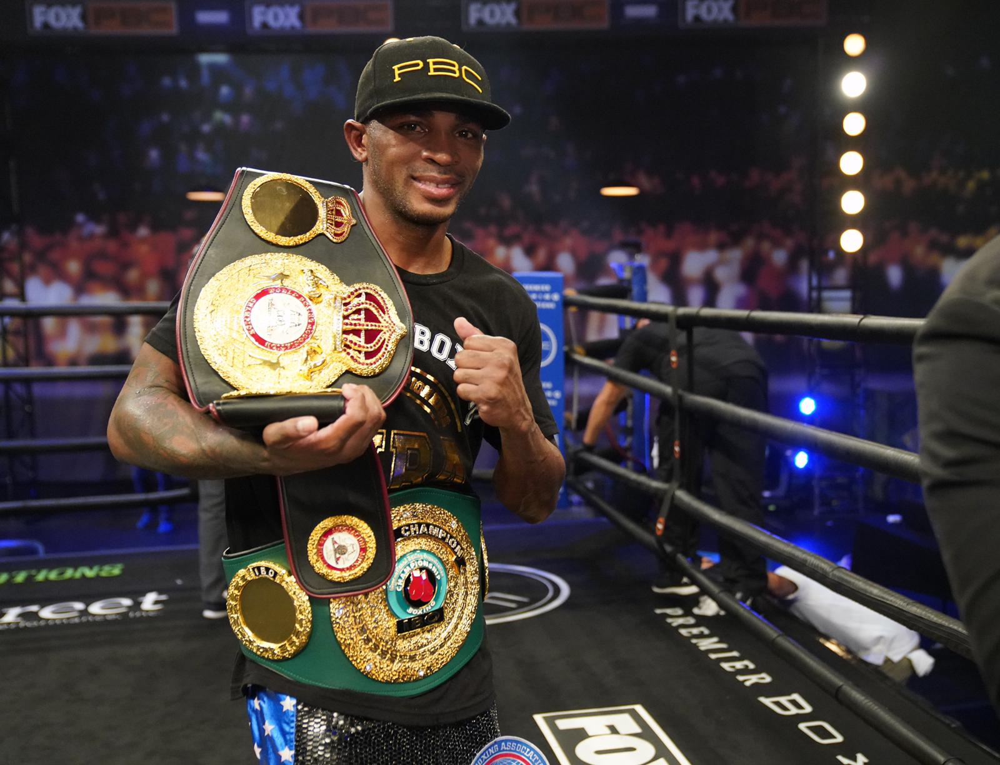

Guardia baja (Low Guard)
1) Los brazos se mantienen más abajo, cerca de la cintura.
2) Los guantes se utilizan para proteger el cuerpo y se mueven para bloquear los golpes.
3) Esta guardia es más arriesgada ya que expone más la cara, pero permite una mayor movilidad y la posibilidad de lanzar contraataques rápidos.
Uno de sus mayores exponentes es Roy Jones, Jr.

Peek-a-boo
1) Los brazos se mantienen altos y cerca de la cara, con los puños cerca de las mejillas.
2) Las manos cubren el rostro, mientras los codos están cerca del cuerpo.
3) Esta guardia enfatiza la protección de la cabeza y el torso, y se caracteriza por movimientos rápidos y ágiles moviendose de un lado al otro como un pendulo.
Uno de sus mayores exponentes es Mike Tyson.

Philly Shell
1) El brazo trasero se coloca cerca de la cintura, mientras que el brazo delantero se mantiene cerca de la cara.
2) El hombro del brazo delantero se usa para proteger la mandíbula.
3) Esta guardia ofrece una defensa sólida para la cabeza, pero puede dejar más expuesto el cuerpo.
Uno de sus mayores exponentes es Floyd Mayweather, Jr.

Guardia De Esgrima
1) El brazo delantero se extiende hacia adelante con la mano abierta, actuando como una "espada" para interceptar y desviar los golpes.
2) El brazo trasero se coloca más cerca del cuerpo, listo para lanzar ataques rápidos y contragolpes.
3) El cuerpo se inclina ligeramente hacia adelante, con la pierna delantera adelantada y la pierna trasera flexionada, lo que permite una mayor movilidad y capacidad de esquivar y desplazarse lateralmente.
4) Esta guardia se enfoca en un enfoque más ofensivo y táctico, utilizando movimientos ágiles y precisos para contrarrestar y contraatacar al oponente.
Uno de sus mayores exponentes es Erislandy Lara.

En conclucion
En conclusión, las guardias en el boxeo son posturas defensivas que los boxeadores utilizan para protegerse y prepararse para lanzar ataques.
Como pudimos observar es importante al momento de boxear elegir tu guardia y tu ritmo.